Awesome Stars
Awesome Stars is a chrome extension that shows you stars of repository on awesome list.
How hot are those stars
There are four levels for the stars of repository. Awesome stars changes its color according to star count:
- Blue for less than 1,000.
- White for 1,000 to 4,999.
- Yellow for 5,000 to 9,999.
- Orange for more than 10,000.

Setup access token
Please DO NOT select any scopes!
Rate limit
Why do you need an access token?
According to GitHub documentation. For unauthenticated requests, the rate limit allows you to make up to 60 requests per hour. Unauthenticated requests are associated with your IP address, and not the user making requests. Awesome
stars can only works properly with an access token.